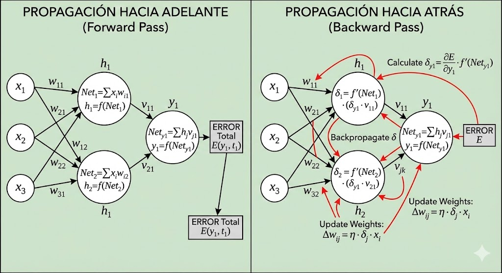
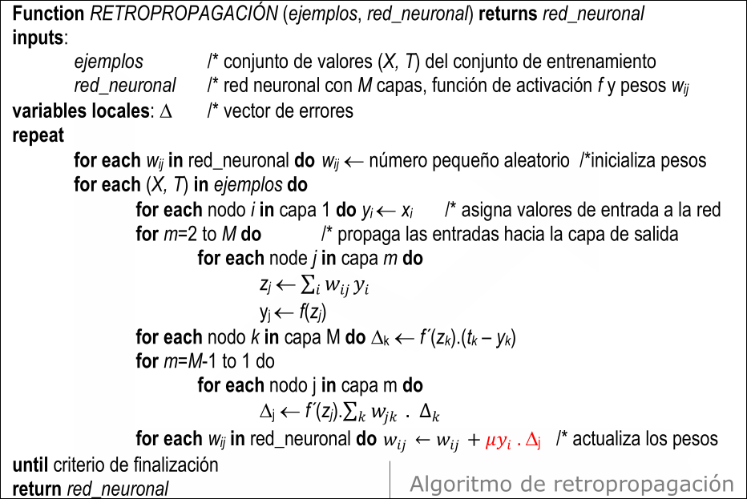

IA · curso 3
7. Aprendizaje en Redes Multicapa, Retropropagación · IA
7.1 El Problema: El Juego de la Culpa
En un Perceptrón Simple (una sola neurona), si el sistema falla, sabemos que la culpa es de esa única neurona. El error es fácil de calcular: Objetivo - Salida.
En una Red Multicapa (Deep Learning), tenemos un problema grave: El Problema de Asignación de Crédito.
- Si la red dice "Gato" y era "Perro", la neurona de salida se equivocó.
- Pero, ¿por qué se equivocó? Quizás porque la neurona oculta de la capa anterior le pasó un dato malo.
- ¿Y por qué esa neurona oculta le pasó un dato malo? Quizás porque la anterior a ella falló.
No tenemos un "profesor" para las capas intermedias. La Retropropagación es el método matemático para enviar la "culpa" del error desde el final hacia atrás, capa por capa, para saber cuánto ajustar cada peso interno.
7.2 Definiciones Previas: Anatomía de la Señal
Para entender las fórmulas, primero debemos distinguir qué pasa dentro de cada neurona.
-
Entrada Neta (
o ): Es la suma bruta de lo que recibe la neurona. - Es el "ruido total" antes de filtrar.
-
Salida (
o ): Es el resultado procesado tras pasar el filtro (sigmoide). - Es lo que la neurona "grita" a la siguiente capa.
Importante
Para poder usar Retropropagación, necesitamos una función de activación que sea suave y continua (derivable en todo punto). Usamos la Sigmoide:
Lo mejor de la Sigmoide no es solo su forma, sino que su derivada es increíblemente fácil de calcular en un ordenador. La derivada se puede expresar en función de la propia salida de la neurona (
- Objetivo (
): El valor correcto que deberíamos haber obtenido (solo existe al final de la red).
7.3 El Fundamento Matemático: El Descenso del Gradiente
Nuestro objetivo es minimizar el Error Global (
: Es un truco matemático. Al derivar , el 2 baja ( ). Al multiplicarlo por , se cancelan. Nos simplifica la vida. - Derivada: Para aprender, necesitamos saber la pendiente. Si cambio el peso
, ¿el error sube o baja?
La Necesidad de la Derivada (La Regla de la Cadena)
Queremos cambiar un peso
- El peso
cambia la Entrada Neta ( ). - La Entrada Neta cambia la Salida (
). - La Salida cambia el Error (
).
Por la Regla de la Cadena, la derivada total es la multiplicación de estos pasos:
Aquí es donde nace el concepto de DELTA (
7.4 El Algoritmo: Ciclo de Dos Pasos
El aprendizaje ocurre repitiendo estos dos pasos.
Paso 1: Propagación Hacia Adelante (Forward Pass)
La red funciona normalmente.
- Metemos los datos en la entrada.
- Calculamos Entradas Netas y Salidas capa por capa hasta el final.
- Comparamos la salida final con el objetivo real.
Paso 2: Propagación Hacia Atrás (Backward Pass) - Calculando Deltas
Ahora calculamos el error local (
A. Para la Neurona de Salida (Sabemos la respuesta):
Aquí es fácil. La culpa es la diferencia directa con la realidad, multiplicada por la sensibilidad de la neurona (su derivada).
: El error bruto. : La derivada de la función sigmoide. Significa "¿Qué tan fácil era hacer cambiar de opinión a esta neurona?".
B. Para las Neuronas Ocultas (La Magia):
No tenemos
: Sumo las culpas de las neuronas siguientes ponderadas por mi conexión con ellas. "Si la neurona siguiente tiene un error gigante ( alto) y yo le grité muy fuerte ( alto), yo tengo mucha culpa".
Nota
Esta imagen no se si está bien pero bueno es un poco para entender como se monta todo este tinglao.

7.5 Actualización de Pesos (El Aprendizaje)
Una vez que cada neurona tiene su "nota de culpa" (
La corrección (
Desglose de la fórmula:
(Tasa de aprendizaje): La Prudencia. "Aunque el error sea grande, corregimos poco a poco para no pasarnos". (Delta del destino): La Dirección del Error. "¿Debo subir o bajar el peso?". (Salida de la anterior): La Evidencia. "Solo corregimos el peso si la neurona de origen estaba activa. Si envió un 0, este peso no tuvo nada que ver en el resultado, así que no se toca".
7.6 Relación entre todas las fórmulas
Partimos de la fórmula del inicio
Si te fijas en la Parte A (los dos primeros términos), verás que coinciden exactamente con la definición de
-
1º Término:
- Como calculamos antes, esto es igual a
. - (El signo menos se suele absorber en la fórmula final de actualización de pesos).
- Como calculamos antes, esto es igual a
-
2º Término:
- Esto es la derivada de la función de activación, es decir,
.
- Esto es la derivada de la función de activación, es decir,
Si multiplicas esos dos términos, obtienes exactamente tu fórmula de delta:
Nota técnica: Matemáticamente,
se define como . El signo negativo del error se cancela con el menos de la definición, quedando el positivo .
La Parte B (
Gracias a esta relación, podemos reescribir la terrorífica Regla de la Cadena (primera fórmula) de una forma súper simple y elegante para programar:
Y de ahí sale la famosa regla de actualización:
En resumen:
- La primera fórmula es la explicación matemática completa (el "por qué").
- La segunda fórmula (
) es el resumen práctico de los dos primeros pasos, que representa la "culpa local" de la neurona antes de mirar sus cables de entrada.
7.7 Resumen del Algoritmo Completo
- Inicializar pesos: Valores pequeños aleatorios (nunca todos a cero).
- Repetir hasta que el error sea bajo:
- Forward: Calcular todas las
y desde el inicio hasta el fin. - Cálculo de Error (
) Salida: Usando . - Backpropagation: Calcular los
ocultos trayendo el error desde el futuro hacia el pasado usando los pesos. - Update: Modificar todos los pesos (
) usando la fórmula .
- Forward: Calcular todas las

7.8 Conclusión de la Asignatura
Una vez más se demuestra que el grado presenta una dejadez considerable por parte de las "vacas sagradas" de la facultad. Y es que no puede ser: estas personas son reconocidísimas en sus ámbitos, publican 300 artículos, acuden a congresos internacionales... pero cuando llega el momento de pensar en sus alumnos y proporcionarles una bibliografía de calidad con la cual puedan aprender los conceptos de forma intuitiva, te sueltan un PDF de 2001 robado de otra universidad o presentaciones sin orden lógico alguno, llenas de palabras sueltas y esquemas incomprensibles.
Eso sí, si te quejas, la alternativa que te ofrecen es el libro de turno de 1990 escrito en alemán por un médico francés. Y apáñate tú para conseguirlo y entenderlo.
La situación es insostenible. Es frecuente encontrarse con:
- Documentación completamente desactualizada
- Materiales de dudosa procedencia sin adaptar al contexto actual
- Presentaciones caóticas sin estructura pedagógica
- Bibliografía obsoleta, inaccesible o en idiomas que nadie domina
¿Tan difícil es hacer las cosas bien? Otras carreras universitarias lo consiguen. No se pide la perfección, pero sí un mínimo de coherencia y actualización en los materiales docentes.
Considero que el grado debería aprender de otras titulaciones y mejorar urgentemente este aspecto. Con la jubilación progresiva de las viejas vacas sagradas de la universidad, espero sinceramente que esta situación mejore con el tiempo y que la nueva generación de profesorado traiga una renovación real en la calidad docente, no solo en la investigadora.
Otra asignatura te lo paso, pero en esta no me jodas. Es imposible que con todos los conocimientos sobre IA que tienes y la cantidad de herramientas que existen, no te salga de dentro redactar unos apuntes propios mediante el uso de la IA.